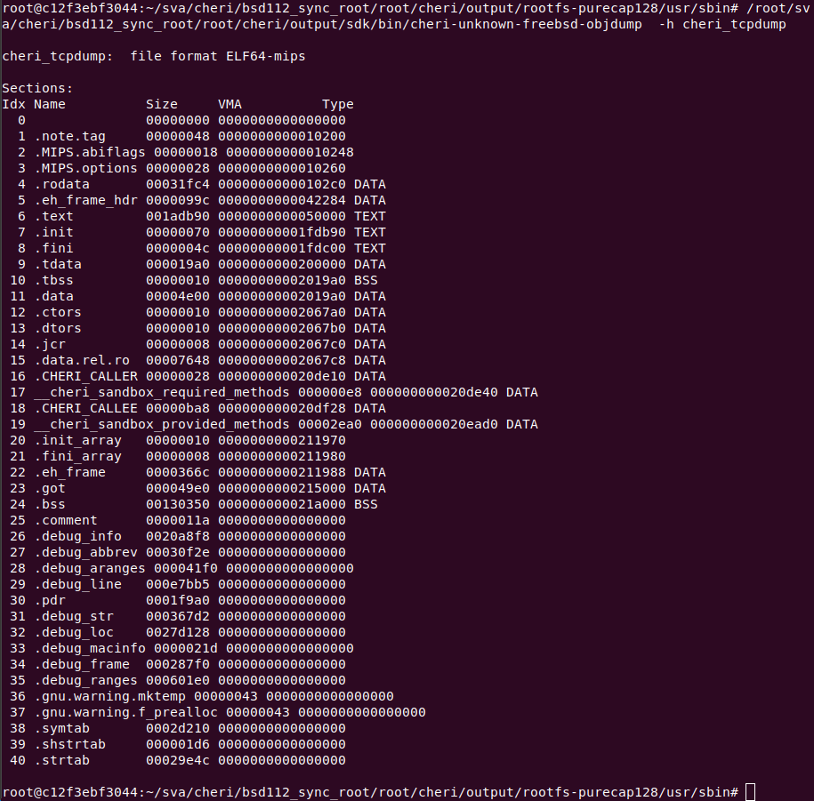

Todos:
what is the 1% of the C userspace not adapted to CHERI? Why?
How to prevent confused-deputy attacks via the kernel?
How cheri generate dynamically linked programs?
What is ABI’s relation with Compilers, OS, and architectures? What is ABI?
C language is not safe.
How to protect C programs.
MMU’s granularity and address validation
C-language memory safety research:
Software and hardware based mitigation techniques
Examples:
MPX
Hardbound/SoftBound/FatPointers
SAFECode/CETS
Cons:
disruptive:
Proposing:
abstract capability: describes the accesses that should be allowed at a given point in the execution, whether in the kernel or userspace.
a large-scale C-language software stack with strong pointer-based protection, with only modest changes to existing C codebases, and with reasonable performance cost.
a complete C, C++, assembly-language software stack, including the open source FreeBSD OS, and PostgreSQL database, to employ ubiquitous capability-based pointer and virtual-address protection.
capabilities are in terms of virtual addresses:
diversity of pointers: created in a wide variety of ways; some of which require special intervention to preserve the provenance chain of abstract capabilities: paged out pointers; pointers in debugging mode.
Two priciples1:
The new CheriABI introduces a new process execution environment in which pure-capability CHERI code can be executed2.
The kernel expects all pointers passed via the system-call interface, and also other interfaces such as command-line arguments and environmental variable, ELF auxiliary arguments, signal handling, and so on, will also be via capabilities rather than MIPS pointers.
This feature can be enabled by compiling options COMPAT_CHERIABI into the kernel, but is currently considered experimental (2015 programmer’s guide2).
Memory accesses are not merely via arbitrary integers (checked against only the process address space), but also require an abstract capability, conferring an appropriate set of memory access permissions;
Provenance in this paper is a series of correct operations like those we describe in 2019-POPL3, not to the attribution of errors as in Bond4.
Abstract capabilities are constructed only by legitimate provenance chains of operations, successively reducing permissions from initial maximally permissive capabilities provided at machine reset; and code is not given access to excessive capabilities.
Importantly, we aim to provides this across whole-system executions, not just within the C-language portion of user processes.
Where pointers are constructed and manipulated:
Virtual to physical mapping: Each process get a principle ID
Physical memory managed: a never-before-used addresses for allocation.
–> Kernel must have the full capability to reconstruct any capability during swapping in.
Then how to constraint this part of kernel to have least privilege?
| Register | Compiler Usage |
|---|---|
| $v0 | contains the method number for cross-domain calls. |
| $c0 | Used implicitly for all non-capability memory accesses. |
| $c1 - $c16 | Used for arguments in the “fast” calling convention. |
| $c1 - $c2 | Code and data capability arguments with the ccall calling convention. |
| $c3 | Capability return value. |
| $c3 - $c10 | Capability arguments (caller-save). |
| $c11 | Sack capability (pure-capability ABI). |
| $c12 | Used with cjalr as the destination register (pure-capability ABI). |
| $c13 | Capability to on-stack arguments (variadic functions only). |
| $c11 - $c15 | Temporary (caller-save) registers. |
| $c17 | Capability link register used with cjalr (pure-capability ABI). |
| $c16 - $c24 | Saved (callee-save) registers. |
| $c25 - $c31 | Not used by the compiler. |
Cheri compiler supports two ABIs, an extended version of the MIPS n64 ABI and the pure-capability ABI where each pointer is a capability.
use jalr $t9, $ra for function call.
calling convention: add support of capability arguments
$c3 - $c10 are passed as capability arguments, with $c3 also used for capability return values.variadic calls does not support capability arguments.
$c11 as stack capability.cjalr $c12, $c17 for function call. use cjr $c17 for return.$c13 register holds a capability to the on-stack arguments.va_start function copies the value that was stored in $c13 on entry to the function.va_list is a capability to the (on-stack) variadic arguments and va_arg calls ensure correct alignment, load from the capability, and increment its offset past the value.$c13 for general range of on-stack arguments.ccallchericcallcc calling convention2:
- use $c1 and $c2 for the first two capability arguments and $v0 for the method number.
- frontend will lower structs to a sequence of scalars, which is generated from a two-capability struct.
backend will track argument registers and return registers, zero unused ones.
compiler generates two special sections, which libcheri runtime will leverage to match the cross domain calls.
__cheri_sandbox_required_methods: metadata about methods that are required by the binary.__cheri_sandbox_provided_methods: metadata about methods that are provided by the binary.The metadata struct for a method in __cheri_sandbox_provided_methods:
// file: lib/libcheri/libcheri_sandbox_methods.c
/*
* Description of a method provided by a sandbox to be called via ccall.
* This data is used to create the 'sandbox class' vtable, resolve symbols
* to fill in caller .CHERI_CALLER variables, and store the corresponding
* method numbers in the .CHERI_CALLEE variables of each 'sandbox object'.
*/
struct sandbox_provided_method {
char *spm_method; /* Method name */
vm_offset_t spm_index_offset; /* Offset of callee variable */
};
/*
* List of methods provided by a sandbox. Sandbox method numbers (and
* by extension vtable indexs) are defined by method position in the
* spms_methods array.
*
* XXX: rename to sandbox_provided_class
*/
struct sandbox_provided_methods {
char *spms_class; /* Class name */
size_t spms_nmethods; /* Number of methods */
size_t spms_maxmethods; /* Array size */
struct sandbox_provided_method *spms_methods; /* Array of methods */
};
/*
* List of classes provided by a sandbox binary. Each binary can
* support one or more classes. No two binaries can provide the same
* class as vtable offsets would be inconsistant.
*/
struct sandbox_provided_classes {
struct sandbox_provided_methods **spcs_classes; /* Class pointers */
size_t spcs_nclasses; /* Number of methods */
size_t spcs_maxclasses; /* Array size */
size_t spcs_nmethods; /* Total methods */
vm_offset_t spcs_base; /* Base of vtable */
};The metadata struct for a method in __cheri_sandbox_required_methods:
// file: lib/libcheri/libcheri_sandbox_methods.c
/*
* Description of a method required by a sandbox to be called by ccall.
*/
struct sandbox_required_method {
char *srm_class; /* Class name */
char *srm_method; /* Method name */
vm_offset_t srm_index_offset; /* Offset of caller variable */
vm_offset_t srm_vtable_offset; /* Method number */
bool srm_resolved; /* Resolved? */
};
/*
* List of methods required by a sandbox (or program). Sandbox objects
* must not be created until all symbols are resolved.
*/
struct sandbox_required_methods {
size_t srms_nmethods; /* Number of methods */
size_t srms_unresolved_methods; /* Number */
struct sandbox_required_method *srms_methods; /* Array of methods */
};Example header dumped from cheri_tcpdump:

Assumptions:
see cheri domain for more details about ccall.
“Capabilities cannot be statically defined in the binary as other data, because doing so will not set the tag.”
A new section in ELF binary: __cap_relocs, which contains instances of the capreloc structure, one for each capability.
struct capreloc
{
void *__capability capability_location;
void *object;
uint64_t offset;
uint64_t size;
uint64_t permissions;
};capability_location: relative address of the capability that must be initialized at run time;object: address of the object that the capability refers to.offset: offset within this object.size: size of underlying object.For example, the code
extern int a[5];
int *b[] = {&a[2], &a[1], a};will be compiled to the following three structures in the ELF:
{ &b[0], &a, 8, 0, 0},
{ &b[1], &a, 4, 0, 0},
{ &b[2], &a, 0, 0, 0}The size is 0 and will be reset after linking.
Limitations (in 2015, programmer’s guide):
- should have a flag to indicate code or data capability.
- have no way of enforcing permissions.
- dynamically linked binaries will need a run-time linker to provide symbol sizes.
In the pure-capability ABI, return address is a $pcc-relative capability.
A success attack, will have to
In the MIPS ABI, return sequence is modified:
$pcc with its offset to the return address.cjr to return.RISC architectures typically provide a jump instruction that puts the return address in another register (e.g.
jalron MIPS,bl[x]on ARM). If the called function calls another function, it must spill return address to the stack, where it can be reloaded later.
If you could revise
the fundmental principles of
computer-system design
to improve security...
... what would you change?